statgenHTP: A short overview
Emilie Millet, Bart-Jan van Rossum
2021-06-09
Source:vignettes/Overview_HTP.Rmd
Overview_HTP.RmdThe statgenHTP Package
The statgenHTP package is developed as an easy-to-use package for analyzing data coming from high throughput phenotyping (HTP) platform experiments. The package provides many options for plotting and exporting the results of the analyses. It was developed within the EPPN2020project to meet the needs for automated analyses of HTP data.
New phenotyping techniques enable measuring traits at high throughput, with traits being measured at multiple time points for hundreds or thousands of plants. This requires automatic modeling of the data (Tardieu et al. 2017) with a model that is robust, flexible and has easy selection steps.
The aim of this package is to provide a suit of functions to (1) detect outliers at the time point or at the plant levels, (2) accurately separate the genetic effects from the spatial effects at each time point and (3) estimate relevant parameters from a modeled time course. It will provide the user with either genotypic values or corrected values that can be used for further modeling, e.g. extract responses to environment (Eeuwijk et al. 2019).
Structure of the package
The overall structure of the package is in 5 main parts:
- Data description and preparation - statgenHTP tutorial: 1. Introduction, data description and preparation
- Outlier detection: single observations - statgenHTP tutorial: 2. Outlier detection for single observations
- Correction for spatial trends - statgenHTP tutorial: 3. Correction for spatial trends
- Outlier detection: series of observations - statgenHTP tutorial: 4. Outlier detection for series of observations
- Parameter estimation - statgenHTP tutorial: 5. Estimation of parameters for time courses
This document gives an overview of these five steps and how to use the package to perform an analysis. For a more in depth description of the data, a theoretical background for the different steps and examples with additional data sets see the package website.
Data description
Example 1: photosystem efficiency in Arabidopsis
The used in this vignette contains data from an experiment in the Phenovator platform (WUR, Netherlands, (Flood et al. 2016)) with Arabidopsis plants. It consists of one experiment with 1440 plants grown in a growth chamber with different light intensity. The data set called “PhenovatorDat1” is included in the package.
The number of tested genotypes (Genotype) is 192 with 6-7 replicates per genotype (Replicate). Four reference genotypes were also tested with 15 or 30 replicates. The studied trait is the photosystem II efficiency (EffpsII) extracted from the pictures over time (Rooijen et al. 2017). The unique ID of the plant is recorded (pos), together with the pot position in row (x) and in column (y). The data set also includes factors from the design: the position of the camera (Image_pos) and the pots table (Basin).
data("PhenovatorDat1")| Genotype | Basin | Image_pos | Replicate | x | y | Sowing_Position | timepoints | EffpsII | pos |
|---|---|---|---|---|---|---|---|---|---|
| G001 | 2 | 1b | 8 | 14 | 32 | 8R02 | 2018-05-31 16:37:00 | 0.685 | c14r32 |
| G001 | 2 | 1b | 8 | 14 | 32 | 8R02 | 2018-06-01 09:07:00 | 0.688 | c14r32 |
| G001 | 2 | 1b | 8 | 14 | 32 | 8R02 | 2018-06-01 11:37:00 | 0.652 | c14r32 |
| G001 | 2 | 1b | 8 | 14 | 32 | 8R02 | 2018-06-01 14:37:00 | 0.671 | c14r32 |
| G001 | 2 | 1b | 8 | 14 | 32 | 8R02 | 2018-06-01 16:37:00 | 0.616 | c14r32 |
| G001 | 2 | 1b | 8 | 14 | 32 | 8R02 | 2018-06-02 09:07:00 | 0.678 | c14r32 |
Data preparation
The first step when modeling platform experiment data with the statgenHTP package is creating an object of class TP (Time Points). In this object, the time points are split into single data.frames. It is then used throughout the statgenHTP package as input for analyses.
## Create a TP object containing the data from the Phenovator.
phenoTP <- createTimePoints(dat = PhenovatorDat1,
experimentName = "Phenovator",
genotype = "Genotype",
timePoint = "timepoints",
repId = "Replicate",
plotId = "pos",
rowNum = "y", colNum = "x",
addCheck = TRUE,
checkGenotypes = c("check1", "check2", "check3", "check4"))
#> Warning: The following plotIds have observations for less than 50% of the time points:
#> c24r41, c7r18, c7r49
summary(phenoTP)
#> phenoTP contains data for experiment Phenovator.
#>
#> It contains 73 time points.
#> First time point: 2018-05-31 16:37:00
#> Last time point: 2018-06-18 16:37:00
#>
#> The following genotypes are defined as check genotypes: check1, check2, check3, check4.In this data set, 3 plants contain less than 50% of the 73 time points. The user may choose to check the data for these plants and eventually to remove them from the data set.
The function getTimePoints allows to generate a data.frame containing the time points and their numbers in the TP object. Below is an example with the first 6 time points of the phenoTP:
## Extract the time points table.
timepoint <- getTimePoints(phenoTP)| timeNumber | timePoint |
|---|---|
| 1 | 2018-05-31 16:37:00 |
| 2 | 2018-06-01 09:07:00 |
| 3 | 2018-06-01 11:37:00 |
| 4 | 2018-06-01 14:37:00 |
| 5 | 2018-06-01 16:37:00 |
| 6 | 2018-06-02 09:07:00 |
Data visualization
Several plots can be made to further investigate the content of a TP object.
Layout plot
The first type of plot displays the layout of the experiment as a grid using the row and column coordinates. The default option creates plots of all time points in the TP object. This can be restricted to a selection of time points using their number in the option timePoints. If repId was specified when creating the TP object, replicate blocks are delineated by a black line. Missing plots are indicated in white enclosed with a bold black line. This type of plot allows checking the design of the experiment.
## Plot the layout for the third time point.
plot(phenoTP,
plotType = "layout",
timePoints = 3)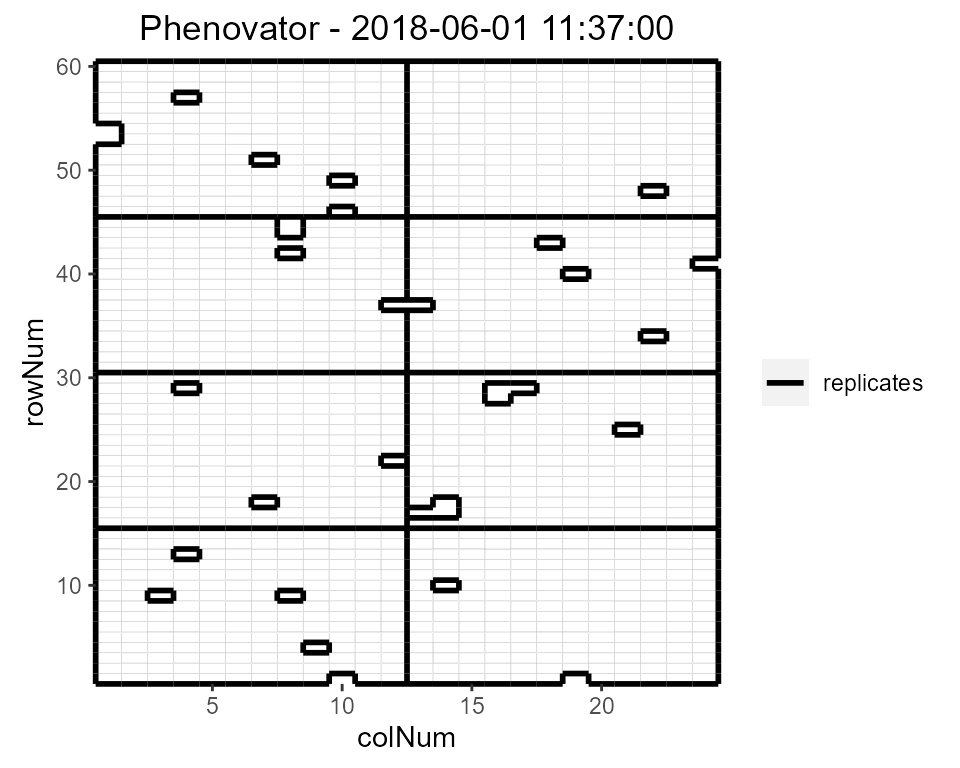
Here, the third time point is displayed which corresponds to the 1st of June 2018 at 11:37. Note that the title can be manually changed using the title option. This plot can be extended by highlighting interesting genotypes in the layout. Hereafter the check genotypes are highlighted:
## Plot the layout for the third time point with the check genotypes highlighted.
plot(phenoTP,
plotType = "layout",
timePoints = 3,
highlight = c("check1", "check2", "check3", "check4"))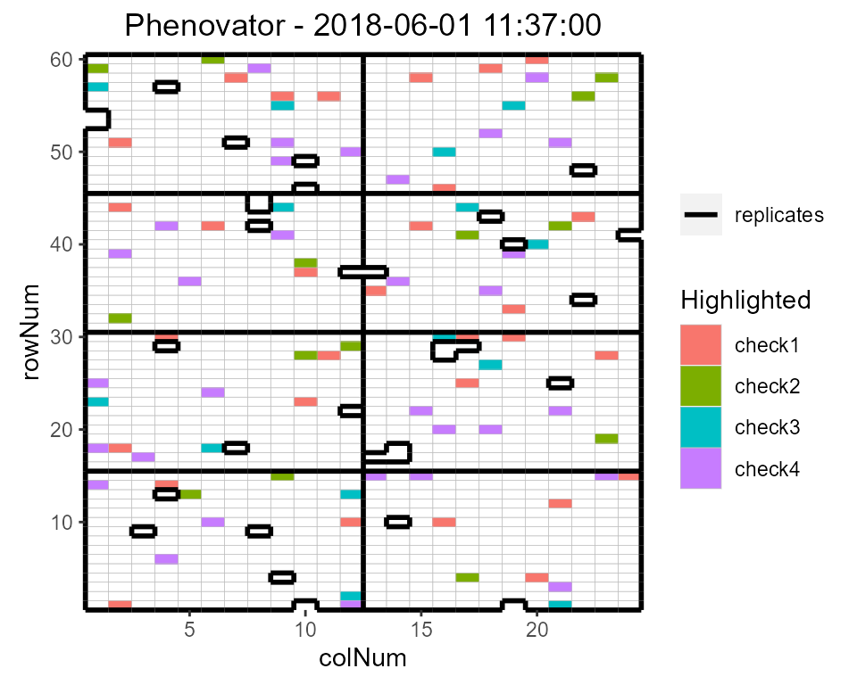
It is possible to add the labels of the genotypes to the layout.
## Plot the layout for the third time point.
plot(phenoTP,
plotType = "layout",
timePoints = 3,
highlight = c("check1", "check2", "check3", "check4"),
showGeno = TRUE)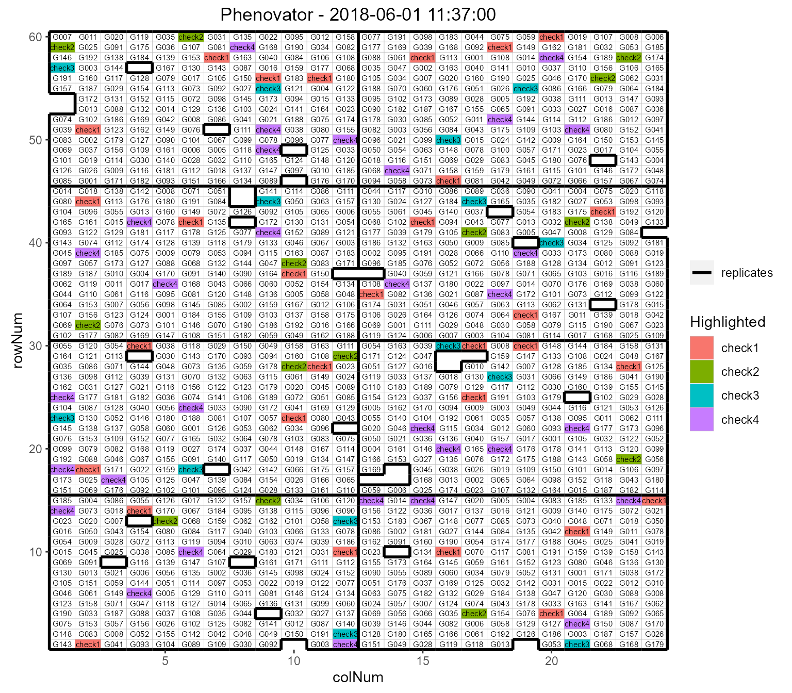
We can visualize the raw data of a given trait on the layout, as a heatmap. This type of plot gives a first indication of the spatial variability at a given time point. This can be further investigated with the spatial modeling.
## Plot the layout for the third time point.
plot(phenoTP,
plotType = "layout",
timePoints = 3,
traits = "EffpsII")
Raw data plot
Raw data can be displayed per genotype with one color per plotId.
## Create the raw data time courses for three genotypes.
plot(phenoTP,
traits = "EffpsII",
plotType = "raw",
genotypes = c("G001", "G002", "check1"))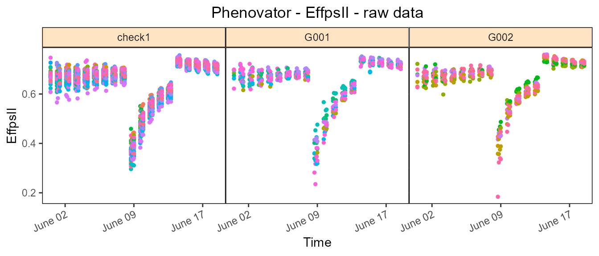
Boxplot
Boxplots can be made to visually assess the variability of the trait(s) in the TP object. By default a box is plotted per time point for the specified trait using all time points.
## Create a boxplot for "EffpsII" using the default all time points.
plot(phenoTP,
plotType = "box",
traits = "EffpsII") 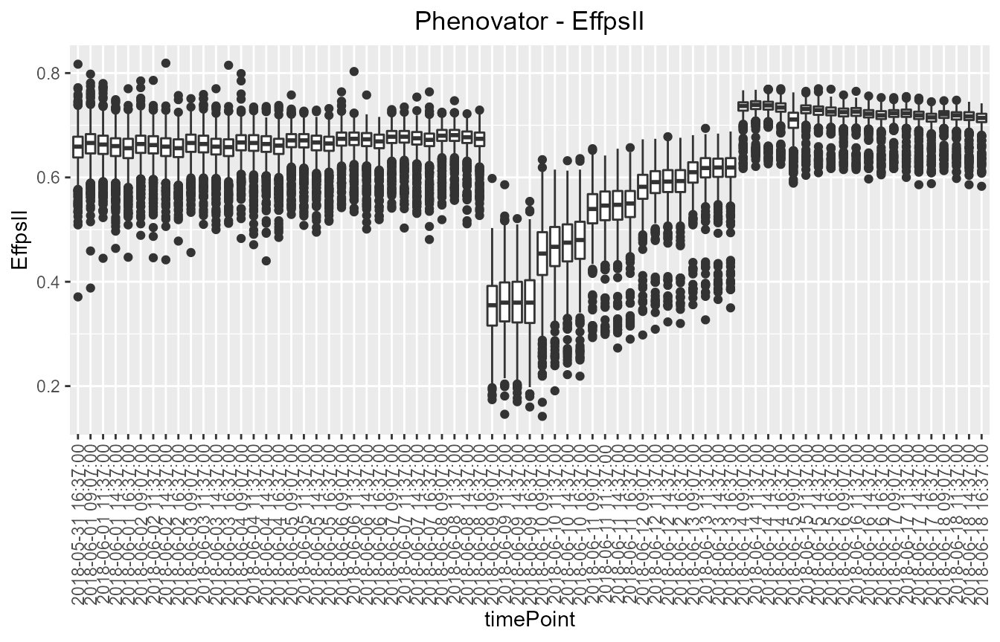
Correlation plot
Finally, a plot of the correlations between the observations in time for a specified trait can be made. The order of the plot is chronological and by default all time points are used.
## Create a correlation plot for "EffpsII" for a selection of time points.
plot(phenoTP,
plotType = "cor",
traits = "EffpsII",
timePoints = seq(from = 1, to = 73, by = 5))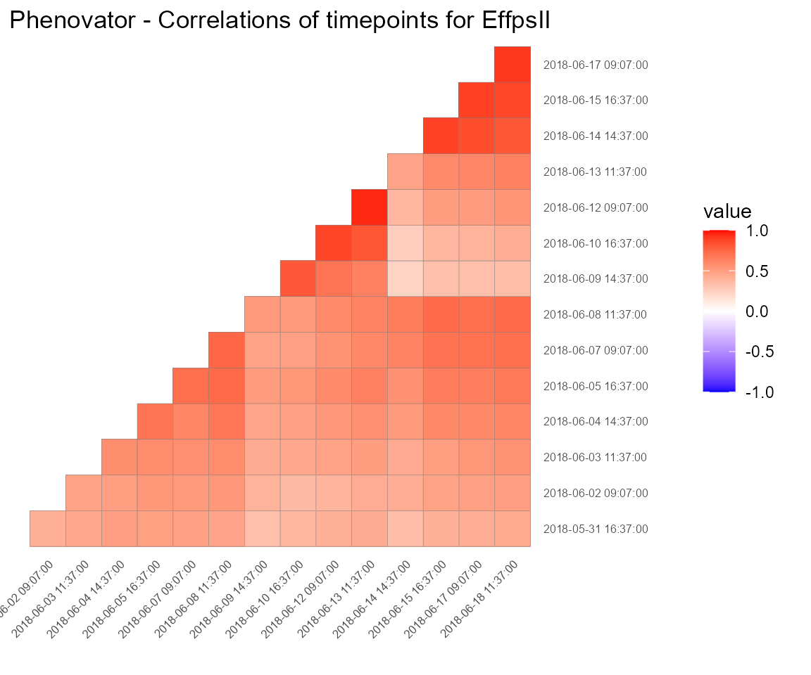
Outlier detection for single observations
Time courses of phenotypic data are viewed as continuous time-related functions. The first cleaning step consists of roughly checking the consistency of each point with its neighbors within a time course. Outlying single observations are measurements that do not follow the expected behavior at a given time. The detection of outlying observations is done “one time course after the other.”
Local regression is used to locally approximate the time courses by parametric functions. First a local regression is fitted at a set of points, then the fit is interpolated to other points. A confidence interval can then be calculated. Points outside this interval will be annotated as outliers.
# First select a subset of plants, for example here 4 plants.
plantSel <- c("c1r17","c13r17","c6r51","c21r24")
# Then run on the subset
resuVatorHTP <- detectSingleOut(TP = phenoTP,
trait = "EffpsII",
plotIds = plantSel,
confIntSize = 3,
nnLocfit = 0.1)| plotId | timePoint | EffpsII | yPred | sd_yPred | lwr | upr | outlier |
|---|---|---|---|---|---|---|---|
| c13r17 | 2018-06-03 09:07:00 | 0.751 | 0.6852574 | 0.0389194 | 0.5684992 | 0.8020156 | 0 |
| c13r17 | 2018-06-03 11:37:00 | 0.538 | 0.6833963 | 0.0255016 | 0.6068916 | 0.7599011 | 1 |
| c13r17 | 2018-06-03 14:37:00 | 0.737 | 0.7045487 | 0.0342136 | 0.6019078 | 0.8071896 | 0 |
| c13r17 | 2018-06-04 09:07:00 | 0.619 | 0.6330957 | 0.0436610 | 0.5021126 | 0.7640788 | 0 |
| c13r17 | 2018-06-04 11:37:00 | 0.711 | 0.6655915 | 0.0322765 | 0.5687620 | 0.7624211 | 0 |
| c13r17 | 2018-06-04 14:37:00 | 0.633 | 0.6861254 | 0.0330415 | 0.5870010 | 0.7852499 | 0 |
The predicted values and the confidence interval can be visualized using the plot function.
plot(resuVatorHTP,
outOnly = FALSE)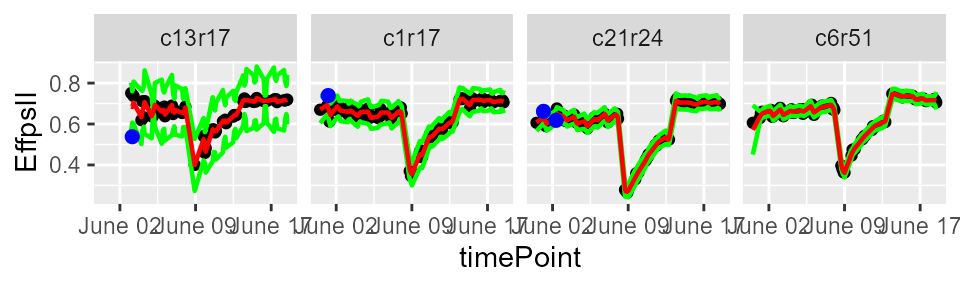
The annotated points can be replaced by NA for the studied trait using the function removeSingleOut. It creates a new TP object.
phenoTPOut <- removeSingleOut(phenoTP,
resuVatorHTP)Correction for spatial trends
Phenotyping facilities display spatial heterogeneity. For example, the spatial variability of incident light can go up to 100% between pots within a greenhouse (Cabrera-Bosquet et al. 2016). Taking into account these spatial trends is a prerequisite for precise estimation of genetic and treatment effects. In the same way as in field trials, platform experiments should obey standard principles for experimental design and statistical modeling.
To get corrected values and genotypic predictions we want to accurately separate the genetic effects from the spatial effects at each time point. To do this, for each time point a spatial model is fitted for the trait we are interested in. In statgenHTP spatial models can either be fitted using SpATS (Rodríguez-Álvarez et al. 2018) and ASReml (Butler et al. 2017). This vignette will focus on models fitted using SpATS. For models fitted using ASReml see this vignette.
Spatial model using SpATS
When SpATS is used for modeling, an extra spatial term is included in the model. This spatial component is composed using the PSANOVA function in the SpATS package which uses 2-dimensional smoothing with P-splines as described in Lee, Durbán, and Eilers (2013) and in Rodríguez-Álvarez et al. (2018).
In the example below the model is fitted for a few points.
Model plots
Several types of plots can be made for fitted models. A spatial plot consists of spatial plots of the raw data, fitted values, residuals and either BLUEs or BLUPs, and a histogram of the BLUEs or BLUPs. When SpATS is used for modeling an extra plot with the fitted spatial trend is included.
plot(modPhenoSp,
timePoints = 36,
plotType = "spatial",
spaTrend = "percentage")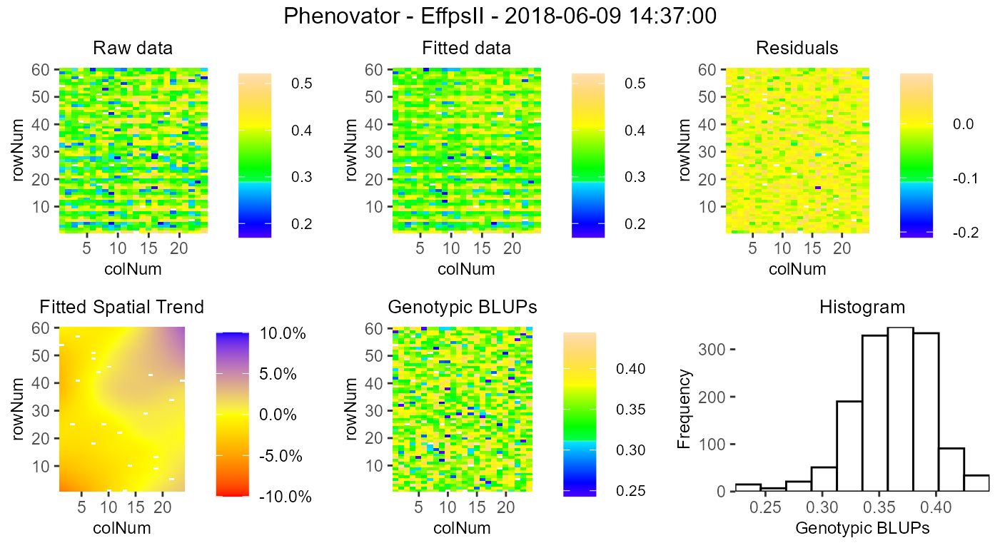
It is also possible to create a time lapse of the ratio of spatial trends over time. The scale is the same as previously described. The time lapse is always written to an output file.
plot(modPhenoSp,
plotType = "timeLapse",
outFile = "TimeLapse_modPhenoSp.gif")In the rawPred plot the raw data (colored dots, one color per plotId) is plotted overlaid with the predicted values (black dots) from the fitted model.
Note: The model has been fitted on a limited number of time points, which is reflected in the plots. For plots using more time point see this vignette.

In the corrPred plot the corrected data (colored dots, one color per plotId) is plotted overlaid with the predicted values (black dots) from the fitted model.
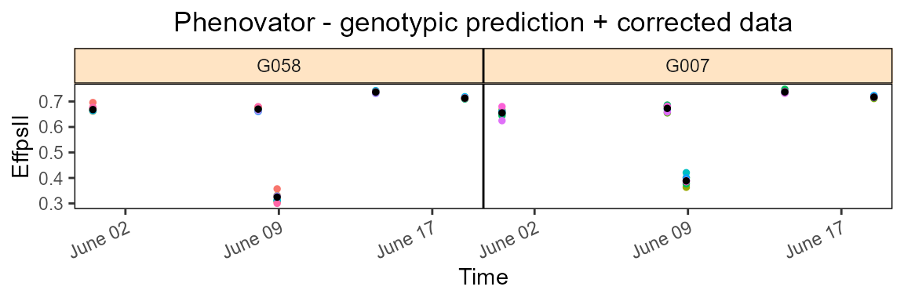
The last three types of plot display different model parameters over time. Plot type herit plots the heritability over time.

Plot type variance plots the residual, column and row variances over time. These plots can serve as diagnostics of the experiment.
plot(modPhenoSp,
plotType = "variance")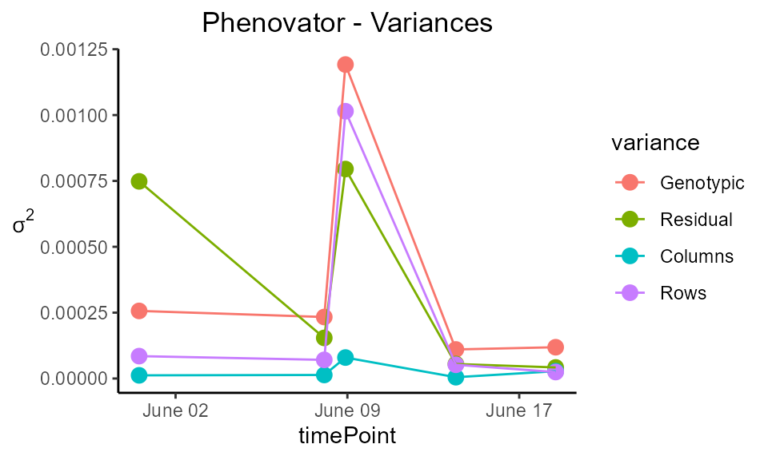
Plot type effDim plots the effective dimension from models fitted using SpATS over time.
plot(modPhenoSp,
plotType = "effDim",
whichED = c("colId", "rowId", "fColRow","colfRow", "surface"),
EDType = "ratio")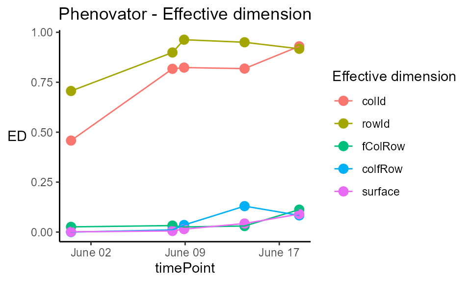
Extracting model results
All results that can be extracted are shown in the table below. The first column contains the function names. The second column contains a short description of the result that will be extracted and, where needed, states for which modeling engines it can be extracted.
| FUNCTION | DESCRIPTION |
|---|---|
| getGenoPred | Best Linear Unbiased Predictions (BLUPS, genotype as random) or Estimators (BLUEs, genotype as fixed) |
| getCorrected | Spatially corrected values at the experimental unit level |
| getVar | Variance components |
| getHerit | Generalized heritabilities - only when genotype is random |
| getEffDims | Effective dimensions - only for SpATS engine |
## Extract the genotypic predictions for one time point:
genoPredSp <- getGenoPred(modPhenoSp)| timeNumber | timePoint | genotype | predicted.values | standard.errors |
|---|---|---|---|---|
| 1 | 2018-05-31 16:37:00 | check1 | 0.6708932 | 0.0050545 |
| 1 | 2018-05-31 16:37:00 | check2 | 0.5811530 | 0.0068930 |
| 1 | 2018-05-31 16:37:00 | check3 | 0.6432175 | 0.0067430 |
| 1 | 2018-05-31 16:37:00 | check4 | 0.6808257 | 0.0049853 |
| 1 | 2018-05-31 16:37:00 | G001 | 0.6706490 | 0.0089158 |
| 1 | 2018-05-31 16:37:00 | G002 | 0.6640368 | 0.0089164 |
Outlier detection for series of observations
After correcting the data for spatial trends, we can now check if the data contains outliers for series of observations. We do this by modeling each time course using a non-parametric smoothing spline with a fixed number of knots. The estimates for the spline coefficients are then extracted per time course (typically per plant) and correlations between those coefficient vectors are calculated to identify outlying time courses, i.e., plants.
The function fitSpline() fits a P-spline per plant for the selected trait. The function output contains the P-spline model coefficients and the values predicted on a dense grid using the P-spline model coefficients.
data(spatCorrectedVator)
# Fit P-splines using on a subset of genotypes.
subGenoVator <- c("G160", "G151")
fit.spline <- fitSpline(inDat = spatCorrectedVator,
trait = "EffpsII_corr",
genotypes = subGenoVator,
knots = 50,
useTimeNumber = TRUE,
timeNumber = "timeNumHour")
# Extracting the tables of predicted values and P-spline coefficients
predDat <- fit.spline$predDat
coefDat <- fit.spline$coefDatWe can then visualize the P-spline predictions and first derivatives for a subset of genotypes or for a subset of plots.
plot(fit.spline,
genotypes = "G160")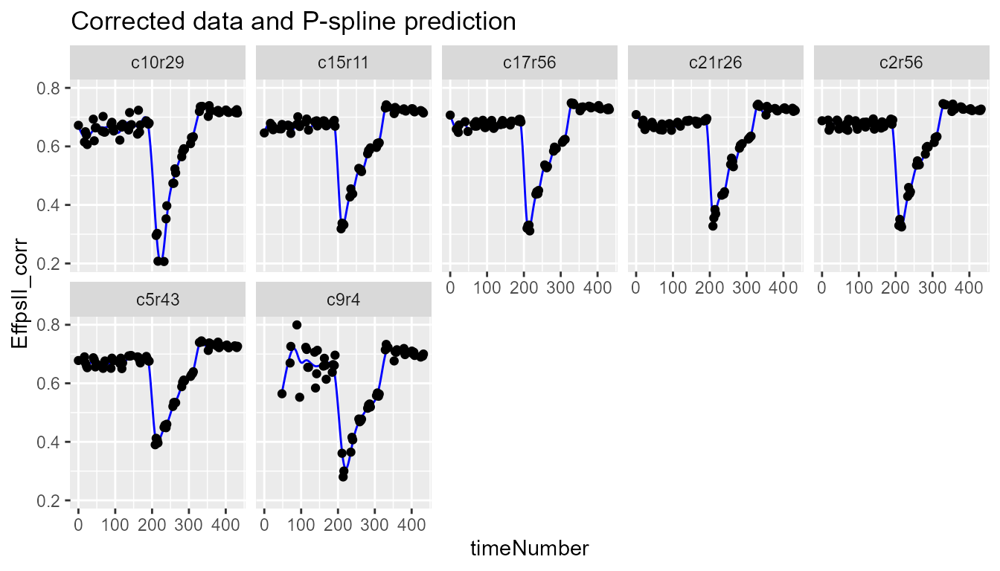
The coefficients are then used to tag suspect time courses with the function detectSerieOut().
outVator <- detectSerieOut(corrDat = spatCorrectedVator,
predDat = predDat,
coefDat = coefDat,
trait = "EffpsII_corr",
genotypes = subGenoVator,
thrCor = 0.9,
thrPca = 30)| plotId | genotype | reason | value |
|---|---|---|---|
| c21r25 | G151 | mean corr | 0.8305035 |
| c21r25 | G151 | angle | 33.8868907 |
| c9r4 | G160 | mean corr | 0.7069584 |
| c9r4 | G160 | angle | 45.1419532 |
| c9r4 | G160 | slope | 0.6432851 |
Visualizing the results we see that for genotype G151 plant c21r25 is tagged as outlier:
plot(outVator, genotypes = "G151")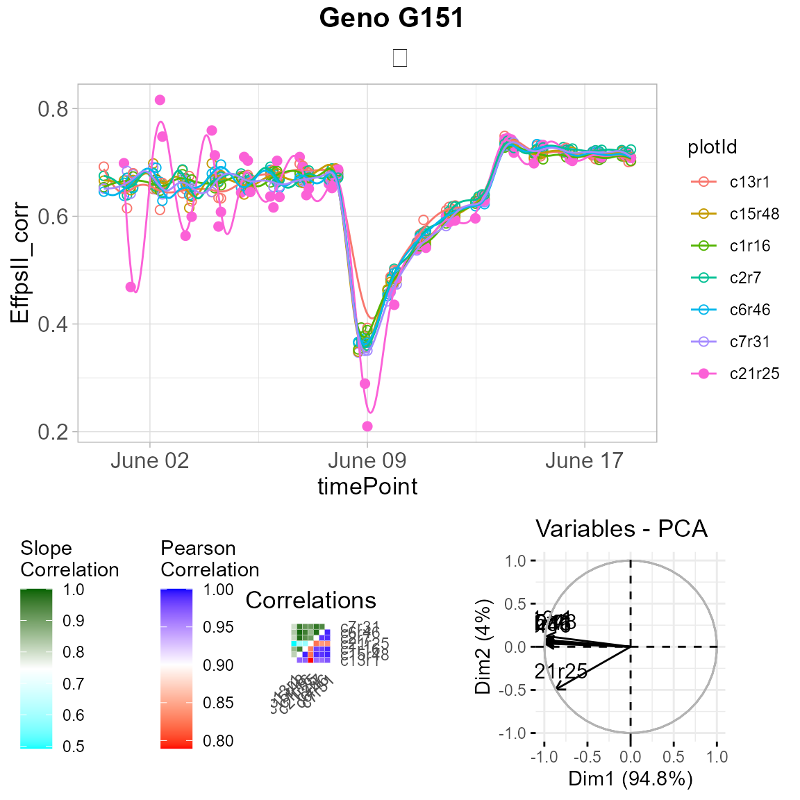
We can then remove the outlying plants from the data set or fitted spline.
fit.splineOut <- removeSerieOut(fitSpline = fit.spline,
serieOut = outVator)Estimation of parameters from time courses
The final step in the HTP data analysis is extracting interesting parameters from the modeled time courses. The parameters can then be further analyzed, for example in a GxE analysis (see statgenGxE), or a genetic analysis (see statgenGWAS).
subGenoVator <- c("G160", "G151")
paramVator1 <-
estimateSplineParameters(HTPSpline = fit.splineOut,
estimate = "predictions",
what = "AUC",
timeMin = 330,
timeMax = 432,
genotypes = subGenoVator)
ggplot(paramVator1, aes(x = genotype, y = AUC_predictions)) +
geom_boxplot(na.rm = TRUE) +
ylab("AUC of EffPsII") +
theme_classic()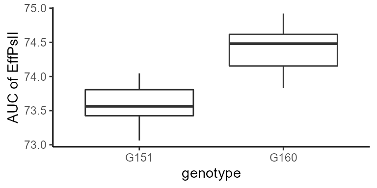